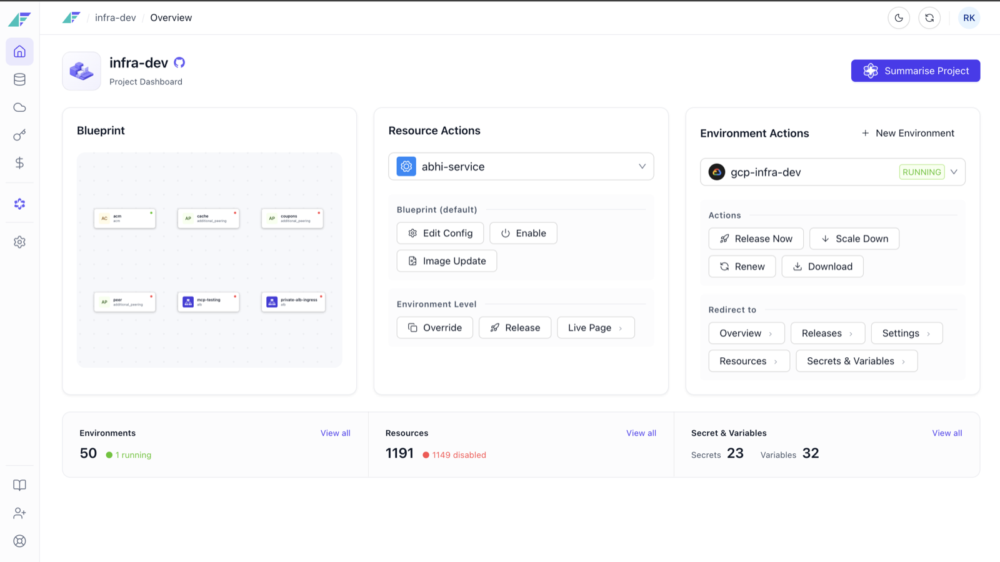
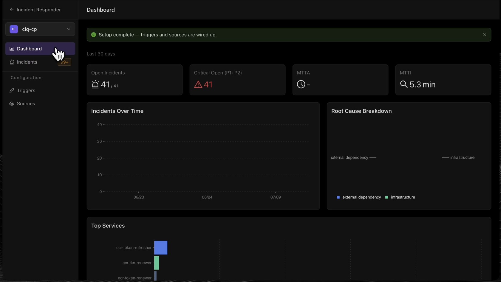

57% fewer clicks running production infrastructure, for 30+ companies
Facets is a self-service infrastructure platform used by 30+ companies to run production. I led the redesign end to end and built a good number of the screens myself, in the live React codebase.
View case study
Self-serve setup 28% to 82% on an AI-built feature teams couldn't adopt
An AI built and designed Praxis Incident Responder. It investigated alerts well, but the UX was so confusing that every team needed a call to get set up. I redesigned the whole journey and built the component system that keeps it consistent, then shipped it in code.
View case study

Automating loyalty promotion creation
Turning 1,000-line rule files into a simple CSV upload for creating and managing loyalty promotions.
View case study
Building a 100+ component design system
Solo-designed component library, patterns, tokens, and usage guidelines for a SaaS platform.
View case study
Wanderlust: travel planning app
An app that helps users plan itineraries, split expenses, access group tickets, and discover destinations.
View case study
Gratifi: employee recognition platform
A platform for spreading positivity, recognizing accomplishments, and nurturing camaraderie at work.
View case study
Enhancing the search experience of Skill-Lync
Redesigning search and filtering across job-guaranteed programs, career programs, and courses.
View case study